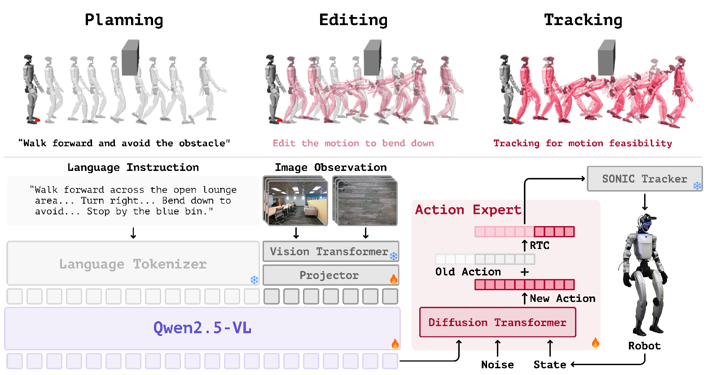
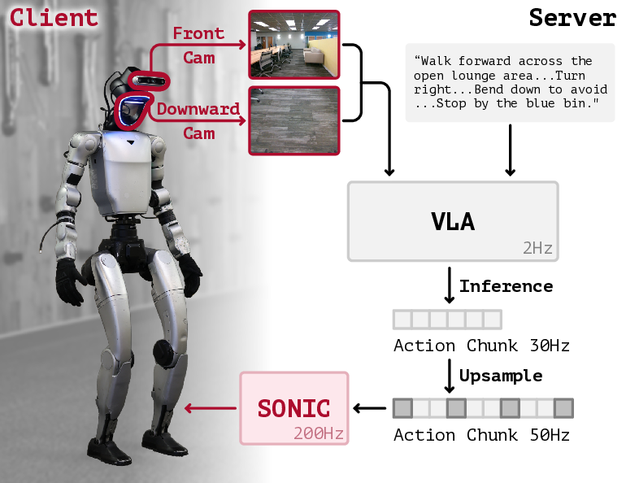
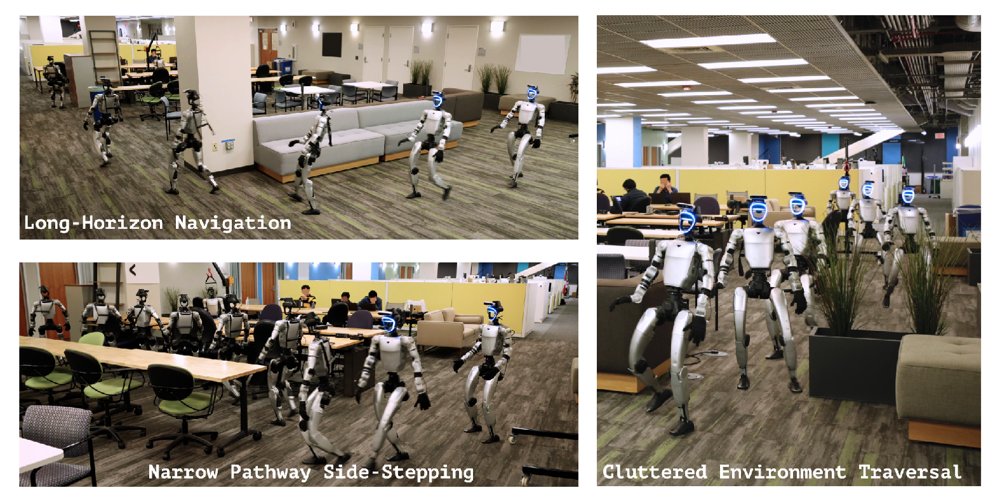

Problem Formulation
Given a language instruction, front/downward RGB history, and whole-body proprioception, TANGO predicts a horizon of whole-body actions: 29-DoF desired joint angles plus a 6D base rotation representation.
CoRL 2026 Anonymous Submission
We study the problem of navigating cluttered indoor environments with a humanoid robot. Unlike conventional navigation methods that operate over simplified navigation abstractions, humanoid traversal in cluttered environments requires continuous geometry-aware whole-body adaptation, including coordinated arm placement, torso adjustment, and gait modulation for collision-free movement through complex 3D spaces.
We introduce TANGO, a whole-body vision-language navigation framework for language-conditioned humanoid traversal in cluttered environments. Given a natural-language instruction and egocentric RGB observations, TANGO predicts 29-DoF joint-space actions for whole-body humanoid control.
TANGO is trained entirely in simulation by synthesizing diverse collision-free traversal behaviors through global path planning, kinematic whole-body motion generation, obstacle-aware motion editing, and reinforcement-learning-based tracking. In simulation and real-world experiments, TANGO improves language-guided navigation and transfers zero-shot to a Unitree G1 humanoid without real-world training data.
Method
TANGO is a whole-body VLA system for cluttered indoor vision-language navigation. It combines a simulation data pipeline for collision-free traversal supervision with a triple-system model that maps language and egocentric RGB observations to executable whole-body action chunks.

Given a language instruction, front/downward RGB history, and whole-body proprioception, TANGO predicts a horizon of whole-body actions: 29-DoF desired joint angles plus a 6D base rotation representation.
VLNVerse and SAGE-3D scenes are augmented with lateral, ground-level, and overhead obstacles. The PET pipeline plans paths, edits motions for obstacle avoidance, and tracks them to dynamic feasibility.
A 7B vision-language backbone is paired with a flow-matching MM-DiT action expert. Real-time chunking aligns training with streaming execution through a robust low-level motion tracker.
At deployment, the low-frequency VLA module runs on a server while the high-frequency whole-body tracker runs onboard, enabling responsive real-world humanoid control.

Experiments
TANGO is the only compared method evaluated with low-level physical control, yet achieves the best SR and NE on both seen and unseen VLNVerse validation splits.
On augmented cluttered VLNVerse scenes, TANGO improves SR and SPL while reducing collision rate to 9.90 percent using only RGB observations.
TANGO transfers zero-shot to a Unitree G1 humanoid for long-horizon navigation, cluttered-scene traversal, and narrow-passage side-stepping.
Whole-body action generation remains robust under physical low-level control, while planar policies degrade substantially when moved from teleportation to embodied execution.
| Method | Low-Level Control | Val Seen | Val Unseen | ||||||
|---|---|---|---|---|---|---|---|---|---|
| NE | OSR | SR | SPL | NE | OSR | SR | SPL | ||
| CMA | No | 5.36 | 59.81 | 37.35 | 33.36 | 5.16 | 62.79 | 31.15 | 27.92 |
| RDP | No | 4.02 | 68.09 | 47.28 | 41.69 | 3.75 | 71.93 | 48.60 | 42.72 |
| Seq2Seq | No | 4.78 | 44.68 | 32.62 | 30.39 | 4.36 | 49.58 | 35.03 | 33.37 |
| TANGO | Yes | 3.90 | 70.31 | 54.69 | 40.18 | 3.72 | 71.07 | 52.89 | 40.18 |
| Method | NE | SR | SPL | CR |
|---|---|---|---|---|
| InternVLA-N1 + Unitree Control | 5.34 | 26.67 | 11.92 | 19.03 |
| InternVLA-N1 + HumanoidPF | 3.19 | 35.29 | 24.35 | 16.11 |
| TANGO | 4.01 | 43.75 | 31.83 | 9.90 |
| Method | Low-Level Control | SR | SPL |
|---|---|---|---|
| InternVLA-N1 | No | 43.69 | 35.74 |
| TANGO-2D | No | 45.74 | 35.44 |
| InternVLA-N1 | Yes | 42.37 | 22.50 |
| TANGO-2D | Yes | 26.67 | 8.34 |
| TANGO | Yes | 52.89 | 40.18 |

TANGO demonstrates that a whole-body VLA policy can directly predict 29-DoF actions for humanoid navigation. The results show strong language-guided navigation performance, improved collision-aware traversal in cluttered scenes, and zero-shot sim-to-real transfer on humanoid hardware.